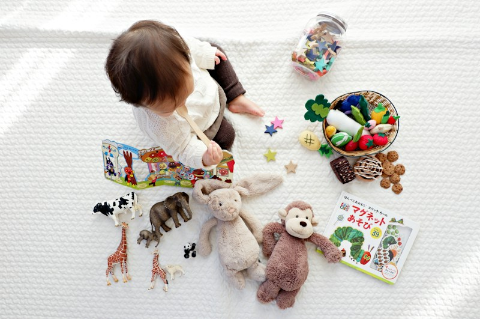

EL MUNDO TRIN1
Pequeños detalles.
Mucho amor.
Trin1 es una propuesta para acompañar la llegada de un bebé: la ropita del primer día, un regalo de bienvenida y los juguetes de sus primeros descubrimientos.
Un espacio para mirar con calma y encontrar inspiración para esta nueva etapa.
Conocer la propuesta